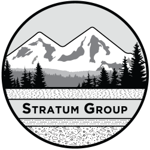

Stratum Group completes more than 150 environmental
projects per
year.
Stratum Group completes more than 150 environmental
projects per
year.
We have a wide variety of clients and work on many types of properties including residential, commercial, office, industrial, and manufacturing facilities. Samples of the types of projects we have completed are listed below.
